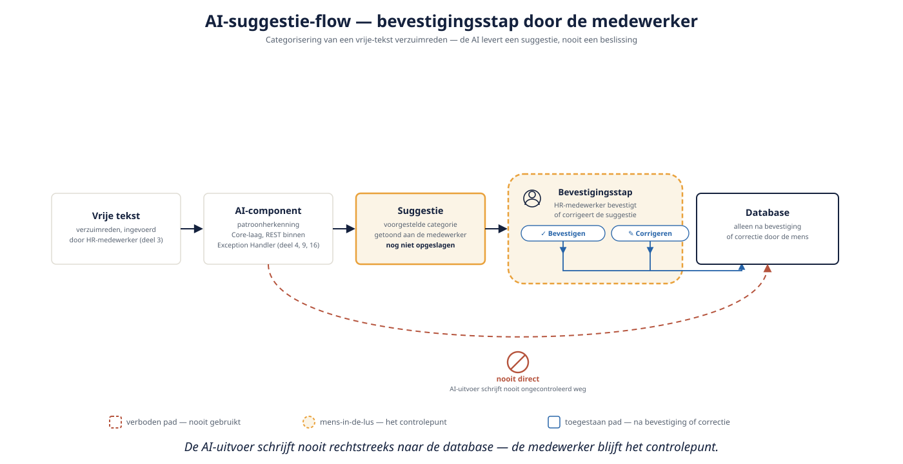

Deel 27 — AI in het platform: wat je wel en niet uitbesteedt
Slidedeck · Ductus-cursus OutSystems · Niveau 3 — Expert · deel 27 van 30 · 14 slides
Slide 1 — Title: OutSystems: Leidend
OutSystems: Leidend
Deel 27 — AI in het platform: wat je wel en niet uitbesteedt
Slide 2 — Bullets: Twee, vaak verwarde toepassingen
Twee, vaak verwarde toepassingen
- AI tijdens het bouwen — ontwikkelassistentie
- AI in de gebouwde applicatie — eindgebruikersfunctionaliteit
- Dit deel: de tweede
Slide 3 — Section: Wat je wel uitbesteedt
Wat je wel uitbesteedt
Slide 4 — Bullets: Patroonherkenning, als suggestie
Patroonherkenning, als suggestie
- Verzuimreden categoriseren: goede kandidaat
- AI levert een suggestie
- Mens bevestigt of corrigeert — nooit direct naar de database

Slide 5 — Opdracht: Opdracht 27.1 — Suggestie of beslissing?
Opdracht 27.1 — Suggestie of beslissing?
Drie AI-toepassingen bij Meridiaan.
→ Werkboek 27.1
Slide 6 — Section: Wat je niet uitbesteedt
Wat je niet uitbesteedt
Slide 7 — Statement: Beslissingen met financieel of juridisch gevolg
Beslissingen met financieel of juridisch gevolg
worden nooit volledig aan AI overgelaten.
Slide 8 — Bullets: Waarom deze grens hard is
Waarom deze grens hard is
- Onder toezicht van DNB en AFM
- Herleidbaarheid naar een verantwoordelijke mens (deel 17)
- "Meestal correct" is geen argument bij individuele impact
Slide 9 — Opdracht: Baan A / Baan B
Baan A / Baan B
A — AI-categorisering integreren in Service Studio
B — Zelfde integratie in ODC Studio
→ Werkboek, eigen baan
Slide 10 — Section: Architecturale plaatsing
Architecturale plaatsing
Slide 11 — Bullets: Zelfde patroon als elke externe integratie
Zelfde patroon als elke externe integratie
- Gedeelde AI-component → Core-laag
- REST-aanroep binnen een Exception Handler
- Geen platformverschil — architecturale discipline is aan jou
Slide 12 — Opdracht: Reflectieopdracht 27.2
Reflectieopdracht 27.2
Waarom is "meestal correct" geen goed argument?
→ Werkboek 27.2
Slide 13 — Bullets: Kernpunten deel 27
Kernpunten deel 27
- AI tijdens bouwen ≠ AI in de applicatie
- AI-componenten: suggestie, nooit onbegeleide beslissing bij impact op een individu
- Verantwoordelijkheid blijft bij een mens, herleidbaar via audit
- Architecturale plaatsing: Core-laag, standaard integratiepatroon
Slide 14 — Section: Volgende deel: Beheersing in productie
Volgende deel: Beheersing in productie